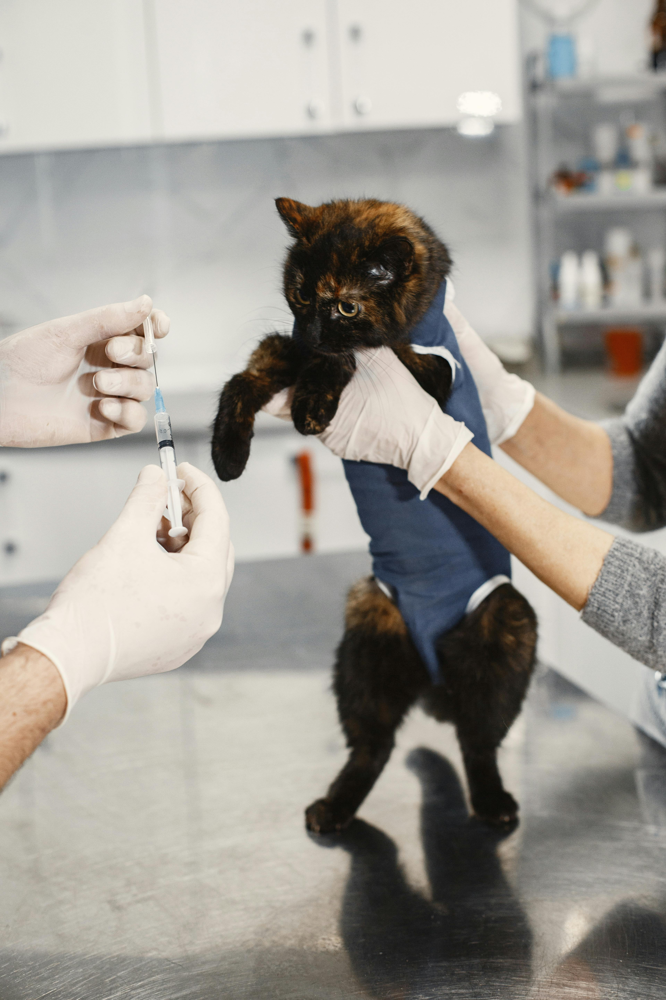

Why We Rescue ?
Transparent
Process
You'll always know each cat's needs, temperament, and history.

Community
First
We work with foster families, adopters, and volunteers to give every cat a second chance.

Trusted by Vets
We work closely with licensed veterinarians to ensure every cat receives proper medical care, vaccinations, and a clean bill of health before adoption.